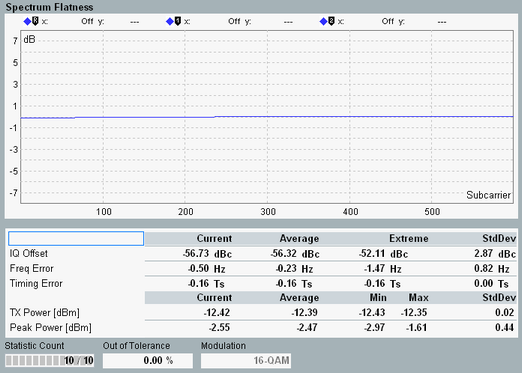

View Spectrum Flatness
The spectrum flatness is determined for the post FFT equalization step, as specified in 3GPP TS 36.141, annex F.3.4. It reflects the spectrum flatness of the inverse equalizer after smoothing and interpolation.
The results are displayed in a diagram and as a table of statistical results.

Spectrum flatness view
The diagram shows the power of the inverse equalizer coefficients for all subcarriers. The results are normalized to the arithmetic mean value of the results. Hence the measurement curve is centered on the 0 dB line.
For additional information, refer to "Common View Elements".